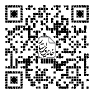
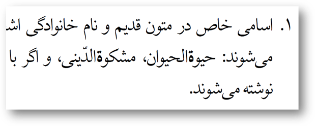
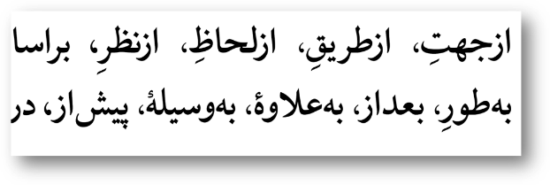

سومین فرهنگستان زبان در ایران با عنوان «فرهنگستان زبان و ادب فارسی» در سال ۱۳۶۹ آغاز به کار کرد و به حکم وظیفهای که برحسب اساسنامۀ خود در پاسداری از زبان و خط فارسی در نظر داشته، از بدو تأسیس درصدد تدوین قواعد و ضوابط خط فارسی بوده است. (دستور خط، ۱۴۰۱، ص ۸) تدوین شیوهنامۀ خط فارسی در سال ۱۳۷۲ به پیشنهاد حسن حبیبی آغاز شد. بعد از شش سال برگزاری کمیسیونهای دستور خط، در ۱۳۷۸ نسخۀ پیشنویس آن در قالب ضمیمۀ شمارۀ ۷ نامۀ فرهنگستان منتشر شد تا در معرض نقد صاحبنظران قرار گیرد. این دیدگاهها انباشته شد و پس از بررسی و اِعمال برخی، کتابچۀ دستور خط فارسی در سال ۱۳۸۱ درآمد. در ۱۳۸۴ نیز ویرایش جدیدی از آن منتشر شد. در ۱۳۹۳ کارگروه بازبینی دستور خط با سرپرستی محمد دبیرمقدم شکل گرفت و تصویب و انتشار ویراست جدید این کتابچه در بهمن ۱۴۰۱ سرانجامِ کارِ این کارگروه بود. طبق گزارش مقدمۀ آن، کلاً بیش از ۱۳۹ جلسه برای تدوین این کتابچه برگزار شده است و افزون بر ۳۶ استاد و کارشناس در این کمیسیونها و جلسهها حضور یافتهاند و بیش از ۶۵ نفر نیز دربارۀ آن نظر دادهاند. (ص ۸-۲۰)
تاکنون دو ویرایش رسمی از دستور خط فارسی عرضه شده است، یکی در ۱۳۸۴ و دیگری در ۱۴۰۱؛ اما آیا با این دو ویرایش، تمام خطاها و نارساییها و ناهماهنگیهای این شیوهنامه برطرف شده و به حدی رسیده که نیاز خط فارسی را برطرف کند و مانع تشتت در خط شود؟ نوشتار حاضر، با بررسی برخی خطاهای موجود در این اثر، به دنبال اثبات ضرورت بازبینی در ویراست جدید دستور خط است. برای این منظور، برخی از خطاهای این ویراست و نقدهای آن بهتفصیل ذکر شده تا ضمن اثبات ضرورتِ این بازبینی، به کارِ کارگروه بازبینی دستور خط نیز بیاید.
پیشینه
تا زمان انتشار مقالۀ حاضر، چند نقد بر ویراست جدید دستور خط منتشر شده است. خلیلیپور (۱۴۰۲) در مقالهای با نام «نگاهی به مسئلۀ دستور خط؛ نقدی بر ویراست جدید دستور خط فرهنگستان» ابتدا از ضرورت دستور خط گفته و رویکردهای اشتباه و درست نهادها و افراد به آن را نقد کرده است. او سپس به نقد دو مبحث از دستور خط پرداخته است: یکی قواعد کسرۀ اضافه و دیگری قواعد فاصلهگذاری حروف اضافۀ مرکب و حروف ربط مرکب. پناهی (۱۴۰۲) در نقدی مطبوعاتی با عنوان «دستور خط فارسی و چالشهای دهۀ سوم»، بهاختصار و با زبان متناسب با مطبوعات، صرفاً به شش نکته به صورت گذرا اشاره کرده است. قربانزاده (۱۴۰۳) در کانال تلگرامیاش مطلبی با عنوان «درنگی بر دستور خط فارسی (فرهنگستان زبان و ادب فارسی، ۱۴۰۱)» منتشر کرده است که به درخواست دکتر علی یاری، رئیس روابطعمومی فرهنگستان زبان و ادب فارسی، نوشته شده است. قربانزاده در این نوشتار، در نوزده بند به نقد محتوای دستور خط پرداخته و پیشنهادهایی برای اصلاح داده است. به غیر از این نقدها، ناصح و اخلاقی (در دست انتشار) نیز پژوهشی دربارۀ ویراست جدید دستور خط انجام دادهاند با عنوانِ «تحلیل تطبیقیِ دستور خطِ جدید و پیشینِ فرهنگستان زبان و ادب فارسی» که در دست انتشار است.
انواع نقدها به ویراست جدید
الف) برخی نقدها به دستور خط به رویکرد فرهنگستان است. برای نمونه، پناهی (۱۴۰۲) به سکوت فرهنگستان در دستور خط دربارۀ شیوۀ گفتارینویسی اعتراض کرده است. نگارنده نیز در یادداشت خود در نقد ویراست پیشین دستور خط با نام «دستور خطی که قرار است جلودار باشد»، نکاتی دربارۀ رویکرد اشتباه فرهنگستان زبان و ادب فارسی در تدوین این شیوهنامه گوشزد کرده است. (حیدریثانی، ۱۳۹۸، ص ۱۹-۲۰)
ب) برخی نقدها به خودِ کتابچۀ دستور خط و قواعد و ضوابط مطرحشده در آن و نیز خطاها و کاستیهایش است. در این یادداشت، از این منظر به دستور خط نگریسته شده و این نقدها در ادامه در دو گروه و مجموعاً هفت دسته برشمرده شده است:
گروه اول: خطاهای محتوایی: لغزش در تدوین، قاعده ندادن، خطای مبنایی.
گروه دوم: خطاهای ویرایشی و صوری: خطای تایپی، نایکدستی، زبان ناآراسته، خطای صفحهآرایی.
۱. لغزش در تدوین
نگارندگان دستور خط هنگام تدوین و تبیین برخی قواعد نتوانستهاند از عهدۀ کار برآیند. در ادامه برخی از این لغزشها بررسی میشود.
۱. برای نمونه، در «قواعد نگارش ضمایر ملکی و مفعولی» (ص ۴۴) که در قالب یک جدول ذکر شده است، میبینیم در دو سطر اول از اصطلاح «صامت» و «متصل» و «منفصل» استفاده شده که پسندیده است؛ اما نگارندگان در سایر سطرها و هنگام بررسی مصوتها از کاربرد اصطلاح گریختهاند و به سراغ عبارت «... با صدایی نظیر آنچه در... به کار رفته است» رفتهاند. این نایکدستی پسندیده نیست؛ ضمنِ اینکه باعث کجفهمی نیز میشود. این احتمال وجود دارد که مخاطب متوجه نشود مقصود از «رهرو» و «پی» مصوت مرکب /ow/ و /ey/ است. شاید مخاطب «رهرو» را مانند «رادیو» تلفظ کند؛ همچنان که در واژهنامههای روزآمد به این تحول آوایی اشاره شده است. یا شاید گمان کند «ی» در «پی» همان «ی» در «سعی» است و نتواند تمایز این دو را تشخیص دهد؛ چون در تلفظ وضع مشابهی دارند.
این نکته دربارۀ دو جدولِ «صورتهای متصل فعل بودن» (ص ۴۲) و «یای نکره و مصدری و نسبت» (ص ۴۶) هم مطرح است.
۲. در نمونۀ دیگر، در بند مربوط به «مصدرهای مرکّب و مصدرهای گروهی» (ص ۶۸) شاهد دو تبصره هستیم:
تبصرۀ ۱: صورتهای مشتق از فعلهای گروهی و مصدرهای مرکّب (اسممصدرها، حاصلمصدرها، صفتهای فاعلی و مفعولی) با نیمفاصله/ بیفاصله نوشته میشوند:
آشتیکنان، ازآبگذشته، بازسازیشده، برونسپاری، بهکارگیری، تصمیمگیرنده، چشمروشنی، فیلمبرداری، یاریدهنده
تبصرۀ ۲: صورتهای اسمی مشتق از فعلهای مرکّب پیوسته نوشته میشوند:
برونداد، پسماند، پیشرفت، چشمداشت، رویداد، عملکرد، گرامیداشت
استثنا: برونرفت، بومنگاشت، بیرونشد، تهنشست
مشخص نیست وقتی در تبصرۀ ۱ گفته شده «صورتهای مشتق از فعلهای گروهی و مصدرهای مرکب»، چه ضرورتی دارد دوباره تبصرهای دیگر بیاید و همان تکرار شود: «صورتهای اسمی مشتق از فعلهای مرکب». آیا این تبصرۀ دوم استثنا از صورت اول است؛ یعنی یکی از اقسام «صورتهای مشتق»، «صورتهای اسمی مشتق» است که در تبصرۀ ۲ آمده؟! اینگونه نیست؛ چون در تبصرۀ ۱ هم نمونههایی از صورت اسمی مشتق ذکر شده است.
پیشنهاد میشود این تبصرۀ ۲ استثنایی از تبصرۀ ۱ در نظر گرفته شود؛ یعنی فقط همین چند نمونه را از نمونههای تبصرۀ ۱ استثنا کنند و دوباره تبصرهای جدید و قاعدهای جدید نسازند. مؤیدِ این پیشنهاد همان استثنائاتی است که از تبصرۀ ۲ ذکر شده است. اگر نمونههای مذکور در تبصرۀ ۲ را استثنائاتی برای تبصرۀ ۱ در نظر بگیرند، دیگر به استثناهای ذیل آن هم نیازی نخواهد بود. بماند که مشخص نیست چرا باید همین واژهها پیوسته نوشته شود. تمام نمونههای مذکور در تبصرۀ ۲ را بهتر است، یا باید، با نیمفاصله نوشت تا قاعدۀ ۴ و ۵ و ۶ از قواعد کلی دستور خط (ص ۲۲) رعایت شود. شاید به نظر برسد با نیمفاصله نوشتن این هفت نمونه نامأنوس است؛ لذا جا دارد از سخن سمیعی یاد شود: «حتی برای آیندۀ نزدیک نیز لزوم تجدیدنظر در شیوۀ املای پیشنهادی را نباید منتفی دانست؛ بهخصوص در جهت کم کردن یا حذف استثناها که پیشبینی میشود با انس گرفتن خوانندگان و نویسندگان و آموزندگان با قواعد، استثناها باشند که نامأنوس جلوه نمایند.» (۱۳۷۸، ص ۲۰۲) اکنون با نیمفاصله نوشتن این هفت صورت برای نگارندگان شاید نامأنوس باشد؛ اما بهزودی و با رواج این قاعده، صورت پیوستۀ آنها نزد فارسیزبانان نامأنوس خواهد بود.
حتی اگر نمیخواهیم همۀ این ترکیبات را با نیمفاصله بنویسیم، باز هم شیوۀ بیان این دو تبصره گیجکننده است. میشد آن را به شکل یک قاعده و یک استثنا، یا با تعاریف بسیار روشنتر بیان کرد. مثلاً با این قاعدۀ کلی:
تبصره: مشتقات حاصل از مصدرهای مرکب با نیمفاصله نوشته میشوند.
استثنا: مگر مواردی که در طول زمان به یک «اسم مستقل» با مفهوم واحد تبدیل شده و کاملاً «واژگانی» شدهاند که در این صورت پیوسته نوشته میشوند.
آنگاه مثالهایی ارائه میشد.
۳. در نمونهای دیگر از لغزش در تدوین، باید به توضیحات غیرضروری نگارندگان در برخی قواعد اشاره کرد. برای نمونه، در یکی از پانوشتها (ص ۴۲) شاهد توضیحاتی هستیم که گرچه مفید است، در دستور خط جایی ندارد:
در جدول بالا، برای حفظ یکدستی و سهولت آموزش، صامت میانجی «ی» انتخاب شده است.
طبق مقدمۀ دستور خط و شیوۀ این کتابچه در بقیۀ قواعد، بنا نبوده دلیل انتخابها ذکر شود. در مقدمۀ دستور خط (ص ۱۲، بند ۶) آمده است:
۶. در بیان قواعد، چنانکه در تدوین متون قانونی مرسوم و متداول است، از ذکر علّت خودداری ذکر شده... .
این توضیحات اضافی، در پانوشتی دیگر (ص ۴۴، پانوشت ۲) نیز تکرار شده است؛ گویا نگارندگان دستور خط نگراناند دیگران به آنها خرده بگیرند، لذا میخواهند دفع دخل مقدّر کنند یا اینکه به مخاطب نشان دهند حواسشان به سایر جنبهها بوده است:
۲. این «ی» ممکن است در مواردی حذف شود. در تداولِ عامّه «بابام» بهجایِ «بابایم» گفته میشود. در ادبیّاتِ داستانی هم، زمانی که نویسنده زبان گفتار را ضبط میکند، وضع به همین منوال است. در شعر هم، بهضرورتِ وزن، این حذف صورت میگیرد. مثلاً استعمالِ «بازوت» بهجای «بازویت» در این مصراع: «آفرین بر دست و بر بازوت باد». در نثر کهن نیز نمونههایی ازایندست وجود دارد: «حجّاج خویشتن آنجا افکند که حسن بود و بازوش بگرفت.» (تذکرة الاولیاء)
ذکر توضیحات غیرضروری بالا در حالی است که در مقدمۀ دستور خط (ص ۱۲، بند ۴) آمده است: «این دستور خط نه برای شعر فارسی، بلکه برای نثر فارسی تدوین و تنظیم شده است.» همچنین در هیچجای این اثر به شیوۀ شکستهنویسی زبان گفتار اشاره نشده است. این توضیحات صرفاً موجب افزایش حجم این کتابِ مختصر و انحراف ذهن مخاطب و دشواری آموزش آن میشود.
۴. در نمونۀ دیگر، ناگهان در میانۀ ذکر شیوۀ نگارش ضمایر ملکی و مفعولی، عبارت «بسنجید با ضمایر ملکی جمع» اضافه شده است! (ص ۴۵) این عبارت آمده تا توجه مخاطب را به تفاوت صورت مفرد ضمایر با صورت جمعشان جلب کند؛ اما این کتاب درسنامه نیست که قسمتی، به قصد جلبتوجه مخاطب، برجسته شود. اگر اینطور است، در هر مبحث دیگری نیز باید بشود اینطور برجستهسازی کرد. در ضمن اگر قصد جلبتوجه در کار بوده است، عبارت «بسنجید» دیریاب است و بهتر است با عبارت سادهتری گفته شود، مثلاً «توجه کنید...». اشکال دیگر اینکه این عبارت و صورتهای جمع داخل پرانتز آمده است. این با تمام نمونههای مذکور در صفحۀ ۴۲ تا ۴۵ نایکدستی دارد. سوم اینکه نگارندگان برای آوردن عبارت نابجای «بسنجید با ضمایر ملکی جمع»، ناچار شدهاند در ستون آغازین، عبارت «پیشاز ضمایر ملکی مفرد» را اضافه کنند؛ گویا در این جدول قرار نبوده صورت املایی هر شش صیغه را تعیینتکلیف کنند! بماند که این عبارت را در سه سطر اول آوردهاند و در سطر چهارم فراموش کردهاند.
۵. در شیوۀ نگارش افعال پیشوندی، در ضمنِ مثالها، «بهدربردن، بهدربُرد، بهدرنبُرد، بهدرمیبرد، بهدرنمیبرد» ذکر شده است. (ص ۶۳، بند ۷) به نظر میرسد این فعل پیشوندی نیست، بلکه عبارت فعلی است و باید کاملاً جدا نوشته شود: «به در بردن، به در بُرد، به در نبُرد، به در میبرد، به در نمیبرد.»
۶. در مبحث ترکیبها دو واژۀ «پنجشنبه» و «یکشنبه» با عنوان «بسیطگونه» یاد شده است (ص ۶۵، سطر ۹-۱۰)؛ اما به نظر میرسد اینگونه نباشد. در ویراست پیشین دستور خط، «بسیطگونه» اینگونه تعریف شده بود: «کلمه بسیطگونه باشد؛ یعنی معنای آن دقیقاً مرکب از معانی اجزای آن نباشد.» (۱۳۸۴، ص ۲۲) اما این تعریف در ویراست جدید حذف شده است و جز در یک جا که «بسیطگونه» داخل پرانتز و بعد از «واژگانیشده» به عنوان معنا و تعریف آن آمده (ص ۶۰، سطر ۷) چیزی ذکر نشده است. به هر حال اگر بسیطگونه بودن همان واژگانی شدن باشد و مقصود از واژگانی شدن هم تبدیل شدن به یک واژۀ مرکب و ذکر آن به عنوان یک مدخل در فرهنگهای لغت در نظر گرفته شده باشد، این معیارِ درستی برای پیوستهنویسی نیست و بسیاری از واژههای واژگانیشده با نیمفاصله نوشته میشوند. این دو واژه یعنی «پنجشنبه» و «یکشنبه» را بسیاری از فارسیزبانان با نیمفاصله مینگارند: «پنجشنبه» و «یکشنبه» که این شیوه موجب همسانی آنها با اسامی سایر روزها نیز میشود: «دوشنبه، سهشنبه، چهارشنبه.»
۷. در ویراست جدید دستور خط با قواعد «فاصلهگذاری در حروف اضافۀ مرکب و حروف ربط مرکب» مواجه میشویم. (ص ۶۹-۷۱) در ویراست قبلی این کتاب، اثری از این قواعد نبود و ظاهراً شتابزده و در جلسات پایانی کارگروه بازبینی دستور خط به این کتاب افزوده شده است. این قواعد برای خط فارسی کاملاً نالازم و حتی مشکلساز است. آنچه مرسوم و متداول نزد فارسیزبانان است، جدانویسی بسیاری از این حرفهای اضافۀ مرکب و همچنین حرفهای ربط مرکب است. به صِرف اطلاق عنوان «مرکب» بر حرف اضافه یا حرف ربط، نمیتوان آن را یک واژه تلقی کرد و بیفاصله نوشت. مگر قرار است هر واحد نحوی را بیفاصله بنویسیم؟ اگر اینطور است، چرا خود دستور خط در ویراست جدید توصیه کرده مصدرهای فعلهای مرکب جدا نوشته شود؟!
این شیوۀ قاعدهگذاری به جای اینکه مشکلی از خط فارسی حل کند، گرهی بر گرههای موجود میافزاید. تا پیش از این اگر دغدغۀ آموزش سایر قواعد وجود داشت، اکنون یک مشکل دیگر به مشکلات آموزش این شیوهنامه افزوده شده است و باید به مخاطب عامِ این کتاب مفاهیمی آموزش داده شود که تشخیص مصادیق آن دشوار است: حرف اضافۀ مرکب و حرف ربط مرکب. این شیوه خلاف قاعدههای ۴ و ۵ و ۶ از قواعد کلی دستور خط (۱۴۰۱، ص ۲۲) است. خلیلیپور (۱۴۰۲) و پناهی (۱۴۰۲) نیز در نقد خود به این مشکل اشاره کردهاند.
به عنوان مؤید این مشکلساز بودن، میتوان به تبصرۀ ۱ حرف اضافۀ مرکب اشاره کرد: «برای پرهیز از بدخوانی توصیه میشود اِعراب حروف اضافۀ مرکّبی مانند دراِزای و درزَمینۀ گذاشته شود.» (ص ۶۹) این یعنی نگارندگان نیز خود به بدخوانی ناشی از این قواعد معترفاند. به هر حال، توصیۀ من حذف کامل این سه صفحه از دستور خط است و توصیه به جدانویسی تمام حرفهای اضافه و حرفهای ربط مرکب و صرفاً ذکر یک استثنا یعنی «به» که قواعدش قبلاً گذشته است. (ص ۳۸) البته میتوان به صورت موردی استثناهایی برای این قاعده ذکر کرد.
جدا از غیرضروری بودن این قواعد برای خط فارسی و منافات داشتن با قواعد کلی (ص ۲۲)، خود این قواعد نارسا و تناقضآمیز است. برای نمونه، در قالب تبصرۀ ۲ از بیفاصلهنویسی حرفهای اضافۀ مرکب، حرفهای اضافۀ سهجزئی استثنا شده است. مبنای این تصمیم چیست؟ اگر نگارندگان دستور خط معتقدند حرف اضافۀ مرکب واژگانی شده و چون یک واحد نحوی است باید نیمجدا نوشته شود، همهجا باید اینطور باشد. اگر هم میگویند بدخوان است که همین اشکال برای دوجزئیها صادق است. البته در تبصرۀ دو صفحۀ بعد، برای حرفهای ربط مرکب، به جای سهجزئی، بیش از سه جزء استثنا شده است (ص ۷۱)؛ اما مشخص نیست این تفاوت چه مبنایی دارد و چرا اینجا چهارجزئی و آنجا سهجزئی استثنا شده است.
تناقض دیگر در این قواعد، به میان آوردن پای یک اصطلاح جدید در حروف ربط مرکبی است که با «که» ساخته شده است: «اگر جزء پیش از که مجموعۀ باز باشد، بین آن جزء و که فاصلۀ کامل گذاشته میشود.» در تعریف «مجموعۀ باز» در پانوشت آوردهاند: «منظور از مجموعۀ باز این است که جزء اسمی آن قابل تغییر باشد.» (ص ۷۰، پانوشت) با این تعریف، در «آنگاهکه» جزء پیش از «که» مجموعۀ باز است: «آن روز که، آن زمان که، آن لحظه که». اگر این مثالها را نمیپذیرید، این مثالها را بنگرید: «آنجا که، آنوقت که، آنطور که». بقیۀ نمونهها نیز همه مجموعۀ باز است.
شایان ذکر است نگارنده بعد از انتشار ویراست جدید دستور خط، تغییرات جدید و از جمله همین پیوستهنویسی حروف مرکب را در پایگاه دادۀ وبگاه «فرهنگ املایی ویراستاران» اعمال کرد؛ اما پس از یک سال و با توجه به بازخوردهای مختلف و همچنین با اجرای این شیوه در کلانپروژههای چندمیلیونواژهای، به ناکارآمدی آن یقین یافت.
میتوان در جمعبندی، اینگونه پیشنهاد داد که اجزای حرف اضافۀ مرکب و حرف ربط مرکب جدا نوشته شود، به جز «به» در حرف اضافۀ مرکب.
۸. این لغزش را میتوان مهمترین خطا در این دسته دانست: لغزش در ساختن اصطلاح. در ویراست پیشین دستور خط، اصطلاحی برای اشاره به کلمات دارای نیمفاصله وجود نداشت و از تعبیر «جدا» استفاده شده بود. مثلاً در ویراست پیشین دستور خط (۱۳۸۴، ص ۲۱) آمده است:
ای همیشه جدا از منادا نوشته میشود:
ای خدا، ای که
در نمونۀ بالا، بین «ای» و «خدا» یک فاصله درج شده است. در چند سطر بعد اینگونه نوشته شده است:
هیچ همواره جدا از کلمۀ پس از خود نوشته میشود:
هیچیک، هیچکدام، هیچکس
در این نمونه، بین «هیچ» و «یک» نیمفاصله درج شده است.
نقدهای متعدد باعث شد نگارندگان دستور خط مجاب شوند این خطا را اصلاح کنند. محمدمهدی باقری کلمات دارای نیمفاصله را، با الگوگیری از عنوان «نیمفاصله»، «نیمجدا» نامیده است. (باقری، ۱۳۹۳، ص ۵۰) وقتی میگوییم دو واژه «جدا» هستند، یعنی بینشان فاصله درج شده است. به همین شکل، میتوانیم بگوییم این دو «نیمجدا» هستند، یعنی بینشان نیمفاصله درج شده است. همین پیشنهاد را در کارگروه بازبینی دستور خط مطرح کردیم که برای پرهیز از وضع اصطلاح جدید، این پیشنهاد پذیرفته نشد. اکنون شاهدیم که در کتاب دستور خط از اصطلاح «با نیمفاصله/ بیفاصله» برای اشاره به کلمات دارای نیمفاصله استفاده شده است و این نااصطلاح بیش از ۳۵ بار در متن دستور خط تکرار شده است، مثلاً (ص ۶۲):
۳. ترکیبهای اتباعی با نیمفاصله/ بیفاصله (بسته به نوع حروف) نوشته میشوند:
پولمول، پولوپله، دمودستگاه، دنگوفنگ، شلوغپلوغ
ناکارآمدی این اصطلاح تا بدانجاست که نگارندگان برای محکمکاری، در این نمونه «بسته به نوع حروف» را داخل پرانتز آوردهاند.
۲. قاعده ندادن
هدف از تدوین شیوهنامه تعیینتکلیف مخاطب دربارۀ شیوۀ نگارش واژهها و پایان دادن به سردرگمی اوست. همچنین شیوهنامه باعث میشود نایکدستی و چندگانگی در املا سامان یابد. در مقدمۀ دستور خط آمده است:
تدوین مجموعۀ قواعد و ضوابط خطّ فارسی، مخصوصاً در سالهای اخیر که استفاده از رایانه در عرصۀ خط و زبان روزافزون شده و حروفنگاری و صفحهآرایی و ویرایش و نمونهخوانی و تهیۀ نمایه و کارهای بسیار دیگری در حوزۀ نگارش و چاپ بر عهدۀ رایانه قرار گرفته و در نتیجه دایرۀ شاغلان به امر چاپ و تکثیر از حلقۀ متخصّصان سنّتی این فن بسی فراتر رفته و گستردهتر شده، ضرورت و اهمّیّت بیشتری پیدا کرده است؛ چنانکه نگرانی از خطر بروز تشتّت و اِعمال سلیقههای مختلف و متضاد نیز نسبت به گذشته افزایش یافته است. (ص ۷)
«نگرانی از خطر بروز تشتّت و اِعمال سلیقههای مختلف و متضاد» از دلایل تدوین دستور خط معرفی شده است. باید گفت شیوهنامه رویکرد تجویزی دارد و نه توصیفی؛ یعنی بنا نیست گزارش دهد که چه صورتهایی برای املای یک واژه در خط ممکن است، بلکه تدوین میشود تا یک صورت را برگزیند و تجویز کند و دیگر صورتها را اجازه ندهد.
با این حال، در متن دستور خط شاهدیم که نگارندگان در تلاش برای جلب نظر همگان و مصون نگه داشتن خود از اعتراض برخی که شاید با صورت مرجح ایشان موافق نباشند، در برخی قسمتها، شیوه و قاعده ندادهاند و صرفاً صورتهای ممکن را برشمردهاند و انتخاب یکی از چند صورت ممکن را به مخاطبان این کتاب واگذاشتهاند. این اقدام نقض غرض از تدوین این کتاب و کوتاهی در انجام وظیفۀ اصلی در نگارش آن است. این مسئله باعث شده این شیوهنامه در بعضی قسمتها «بیشیوگی» را ترویج کند. در ادامه به چند نمونه از این قاعده ندادنها اشاره میشود.
۱. دربارۀ نگارش الف «ابن» وقتی بین دو اسم خاص قرار بگیرد، با گذاشتن علامت «/»، هر دو صورت مجاز شمرده شده است: با الف یا بدون الف. (ص ۳۶، سطر ۴)
حسین بن علی / حسین ابن علی، محمّد بن زکریای رازی / محمّد ابن زکریای رازی، فاطمه بنت رسولاللّه.
۲. دربارۀ شیوۀ نگارش «ها» (نشانۀ جمع)، هر دو صورت پیوسته و جدا مجاز شده و صورت پیوسته را صرفاً «توصیه» کردهاند. (ص ۴۰) نگارندگان دستور خط باید توجه کنند که وظیفۀ شیوهنامه «توصیه» کردن نیست؛ بلکه «شیوه» دادن است. در شیوهنامه باید یک صورت را از بین چند صورتِ ممکن یا رایج برگزید و صرفاً همان را تجویز کرد و مجاز شمرد تا تشتت در خط پایان یابد و مخاطب تعیینتکلیف شود. جالب اینکه همین بیشیوگی دستوپاگیر خودِ نگارندگان دستور خط شده و بهناچار، برای صورت پیوستۀ «ها» شش استثنا ذکر کردهاند که یک صفحه از حجم این کتاب مختصر را بدون هیچ فایدهای اشغال کرده است و قواعدش را نمیتوان بهراحتی به خاطر سپرد و به کار برد و این یعنی تخلف از قاعدۀ ۴ و ۵ و ۶ از قواعد کلی دستور خط که بر تمام قواعد آن حاکم است. (بنگرید به ص ۲۲)
۳. در پانوشت دربارۀ «مجموعۀ ام، ای، است، ایم، اید، اند» اعلام کردهاند صامت میانجی «ی» را برای واژههای پایانیافته به واکه که جزء پس از آن با واکه آغاز میشود، برگزیدهاند، اما افزودهاند که در این جایگاه از دو همخوان میانجی «ی» و همزه با ارزش یکسان «میتوان» استفاده کرد. (ص ۴۲، پانوشت ۱) این توضیح اضافه و غیرضروری، هم انتخاب دستور خط را تحتالشعاع قرار میدهد و هم مخالفت با بند ۶ از نکات مذکور در مقدمۀ دستور خط است که گفته شده در بیان قواعد، از ذکر دلیل خودداری شود. ( بنگرید به ص ۱۲)
۴. دربارۀ روش نگارش صورت متصل فعل «بودن» در واژههای پایانیافته به «و»، با صدایی مانند آنچه در «تو» به کار رفته است، دو صورت پیشنهاد دادهاند: «توای / تویی.» (ص ۴۳)
۵. دربارۀ واژههای پایانیافته به واکۀ مرکب /ow/ آوردهاند که اگر کسرۀ اضافه درج شود، به کار بردن همخوان میانجی «ی» یا نیاوردن آن، «تابع تلفظ خواهد بود». (ص ۴۷) اشکال اول اینکه قواعد نباید به گونهای تدوین شود که مخاطب در کاربرد آنها به دانش خاصی نیاز داشته باشد و اینجا تشخیص شیوۀ تلفظ رایج، به دقتهای واجشناختی نیازمند است. دومین ایراد این است که ممکن است تلفظ کسی با دیگری متفاوت باشد و همه یکسان تشخیص ندهند و این خود موجب تشتت است و خلاف شیوهنامهنویسی.
۶. در پانوشت مبحث «همزهنگاری» آمده همزۀ پایانی بدون کرسی در کلماتِ «علماء» و... در اضافه به کلمۀ پس از خود، غالباً حذف میشود و به جای آن «ی» میانجی میآید، مانند «علمای اَعلام» و...؛ ولی حفظ این همزه هم صحیح است: «علماء اَعلام» و... . (ص ۵۱، پانوشت ۱) در نگارش شیوهنامه برای پایان دادن به تشتت در خط و چنداملایی، ناچاریم یک صورت را برگزینیم، نه اینکه شیوههای رایج در خط فارسی را صرفاً توصیف کنیم. شیوهنامه رویکرد تجویزی دارد و این گاه از نگاهِ نگارندگان دستور خط پنهان مانده است.
۷. در روش نگارش «ة» در ترکیبهای عربی رایج در فارسی، گفته شده به صورت «ـة/ ة» نوشته میشود؛ اما گاهی به صورت «ت» نیز میآید که آن هم درست است، مانند «آیتاللّه» و «حجّتالاسلام». (ص ۵۴) نگارندگان توجه نکردهاند که در حال تدوین شیوهنامه و تجویز هستند، نه توصیف خط فارسی.
۸. دو صورت برای این اسامی اعلام شده است: «صغری / صغرا، کبری / کبرا، هدی / هدا». (ص ۵۵)
۹. در مبحث «ترکیبها» (ص ۵۸-۶۸) شاهد بزرگترین و آسیبرسانترین نمونۀ بیشیوگی در این شیوهنامه هستیم. در اینجا نگارندگان وقتی خواستهاند یک مبنا را برگزینند، شیوۀ بیشیوگی را برگزیدهاند، یعنی موارد الزامی جدانویسی و پیوستهنویسی را مشخص کرده و انتخاب شیوۀ نگارش بقیۀ واژهها را به انتخاب خود مخاطب گذاشته و شانه از زیر بار مسئولیتِ تعیینتکلیفِ مخاطب خالی کردهاند.
۱۰. دربارۀ نگارش الف در «بسمهتعالی/ باسمهتعالی»، هر دو صورت را مجاز شمردهاند. (ص ۶۴)
۱۱. وقتی در متن شیوۀ نیمجدا را برای نگارش اعداد بدون واو انتخاب کردهاند، در پانوشت آوردهاند که صورت پیوستۀ این اعداد نیز رایج است: «یکصد، ششصد، هفتصد، هشتصد». (ص ۶۵)
۱۲. دستور خط در مبحث «واژههای چنداملایی» (ص ۷۲-۸۵)، از بین دو یا چند صورت موجود، یکی را برگزیده است؛ اما در ۲۵ واژه، هر دو صورت را انتخاب کرده است که باید گفت در واقع چیزی را انتخاب نکرده و مخاطب را بلاتکلیف رها کرده است:
باتون/ باتوم (چماق پلیس)، بُخْتُنَصر/ بُخْتُنَصَّر، پیشخوان/ پیشخوان، تبرزد/ طبرزد، توفان/ طوفان، دایرةالمعارف/ دائرةالمعارف، دُکمه/ دُگمه، رتیل/ رطیل، سرشک/ سرشگ، سوگ/ سوک، نعنا/ نعناع، آفریقا/ افریقا، آمریکا/ امریکا، بوزرجمهر/ بوذرجمهر(ی)، تالش/ طالش، تخارستان/ طخارستان، تسوج/ طسوج، توالش/ طوالش، توس/ طوس (نام شهر و نام شخص)، تهماسب/ طهماسب، تهمورث/ طهمورث، سرپلذهاب/ سرپلزهاب، سقلاب/ صقلاب، صغری/ صغرا، کبری/ کبرا
۱۳. برخی قوانین دستور خط مبتنی بر شمّ زبانی است و در بعضی از قواعد، نگارندگان انتخاب شیوۀ نگارش را به شمّ زبانی مخاطبان واگذاشتهاند. شمّ زبانی را نمیتوان بهدقت ارزیابی کرد و درک مخاطبان نیز گاه متفاوت میشود؛ مخصوصاً اینکه فارسیزبانان به لهجههای گوناگون سخن میگویند و با متونی با رسمالخطهای گوناگون سروکار دارند که صورت تلفظ واژهها یا عادت ایشان در نحوۀ نگارش کلمات را چندگونه کرده است. این باعث بلاتکلیفی مخاطب میشود و نقض غرض از تدوین شیوهنامه است:
الف) همانطور که گذشت، درج «ی» میانجی برای عباراتی مانند «پرتوی آفتاب / پرتوِ آفتاب»، تابع تلفظ قرار داده شده است. (ص ۴۷)
ب) برای شیوۀ نگارش پسوندهای «گر» و «گری» در واژههای پایانیافته به «ی»، گفته شده اگر «دشوارخوان» باشد، جدا نوشته میشود. این ملاک ذوقی و مبتنی بر شم زبانیِ مخاطب است. (ص ۵۹)
باید یادآوری کرد که فرهنگستان در مقدمۀ کتاب فرهنگ املایی خط فارسی، نامطلوب بودن این قاعده ندادن و بیشیوگی را پذیرفته است و خواسته برای آن چارهجویی کند:
از آنجا که بهخاطرسپردنِ تمامِ قواعدی که در دستورِ خط آمده برای هیچکس جز معدودی از متخصّصان امکانپذیر نیست و ازسویِدیگر، عمومِ نویسندگان، اعم از محقّقان و نثرنویسان و شاعران و ویراستاران و روزنامهنگاران و منشیان و غیره هنگامِ نوشتنِ کلماتِ مرکّب و مشتق و بعضی کلماتِ دواملایی یا سهاملاییِ دیگر دچارِ تردید میشوند فرهنگستان چاره را در آن دید که دست به انتشارِ یک فرهنگِ املاییِ مبتنی بر قواعدِ دستورِ خطِّ فارسی بزند و املایِ کلماتی را که در این دستور بهعهدۀ سلیقه و ذوقِ نویسندگان گذاشته بود، تا آنجا که امکان دارد، بیشتر قاعدهمند سازد یا شیوۀ مرجّحِ خود را که در بسیاری از موارد اختیارِ دو املاست - در آن بگنجاند. (صادقی و زندیمقدم، ۱۳۹۴، ص ۹-۱۰)
سرانجام اینکه خوانندگان فرهیختۀ این مقاله میدانند انتخاب یک صورت از بین دو یا چند صورتِ ممکن در املای یک واژه، به معنای نادرست دانستن یا رایج ندانستن صورتهای دیگر نیست، بلکه اقتضای نگارش شیوهنامه این است که از بین چند صورتِ ممکن یا موجود یکی انتخاب شود.
۳. خطای مبنایی
در مبحث «ترکیبها» (ص ۵۸-۶۸) دربارۀ شیوۀ تدوین قواعد آمده است:
در خطّ فارسی برای فاصلهگذاری ترکیبها سه فرض قابل تصوّر است:
۱. تدوین قواعدی برای جدانویسی همۀ ترکیبها با نیمفاصله یا بیفاصله و تعیین موارد استثنا.
۲. تدوین قواعدی برای پیوستهنویسی همۀ ترکیبها و تعیین موارد استثنا.
۳. تدوین قواعدی برای نوشتن الزامی بعضی از ترکیبها با نیمفاصله یا بیفاصله و پیوستهنویسی بعضی دیگر.
فرهنگستان، در تدوین و تصویب دستور خطّ فارسی، فرض سوم را برگزیده و تنها موارد الزامی جدانویسی یا پیوستهنویسی را به شرح ذیل معیّن کرده است:...
در انتخاب مبنا برای تدوین قواعد نگارش ترکیبها، قاعدههای ۴ و ۵ و ۶ از قواعد کلیِ دستور خط (ص ۲۲) مد نظر نبوده است. این سه قاعده عبارت است از:
۴. فراگیر بودن قاعده
کوشش میشود قواعد املا به گونهای تدوین شود که استثنا در آن راه نیابد. استثناهای ناگزیر یکبهیک ذکر شدهاند.
۵. سهولت نوشتن و خواندن
قاعده باید به گونهای تنظیم شود که نوشتن و خواندن را آسان سازد؛ یعنی تا آنجا که ممکن است، رعایت قواعد خط به معنا و قرینه وابسته نباشد.
۶. سهولت آموزش قواعد
قواعد باید به صورتی تنظیم شود که آموختن و به کار بردن آنها تا حدّ امکان آسان باشد.
بیاعتنایی به این قواعد کلی در انتخاب مبنا برای تدوین قواعد نگارش ترکیبها باعث شده قواعدی تدوین شود که فراگیر نیست و پُراستثناست، به سهولتِ خواندن و نوشتن کمک نمیکند و نیز نمیشود بهسادگی این قواعد را آموزش داد و فراگرفت. خروجی کار نگارندگان بیش از ۲۲ قاعده در 10 صفحه است و اینهمه قاعده بیش از ۲۶ استثنا دارد. اشکال اینهمه استثنا تودرتو بودن آنهاست؛ یعنی استثناهایی ذکر کردهاند و باز از آنها استثنا کردهاند. نایکدستیهای موجود در متن این کتاب نشان میدهد خودِ نگارندگان گاهی نتوانستهاند در متن دستور خط فارسی این قواعد را اجرا کنند. به این نایکدستیها در گروه پنجم اشاره خواهد شد.
این رویکرد در تدوین قواعد در ویراست قبلی دستور خط نیز وجود داشت و با نقدهای فراوان و از جمله نقد نگارنده مواجه بود که به اطلاع کارگروه بازبینی دستور خط نیز رسید. نگارنده برای اینکه بتواند به تحلیلی از این قواعد برسد، با صرف دهها ساعت و در تلاش برای رسیدن به الگوریتمی از قواعد ترکیبات، صرفاً به نموداری بزرگ با ۴۶۳ شاخه دست یافت که کاستیها و تناقضهای قواعد دستور خط را به بهترین شکل آشکار میکند. برای دیدن این نمودار، رمزینۀ زیر را اسکن کنید.

نمودار یادشده نشان میدهد که قواعد ترکیبات آموزشپذیر نیست و نمیتوان در عمل آنها را اجرا کرد. همچنین قابلیت استخراج الگوریتم برای ارتقای هوش مصنوعی و... را نیز ندارد. این اشکالِ مهم ناشی از نبود نگاه کل به جزء و نظاممند در تدوین قوانین و نگارش دستور خط بوده است. پیشنهاد نگارنده و دیگر متخصصان این حوزه برای رفع این ایراد این است که دستور خط بنا را بر جدانویسی بگذارد و صرفاً به چند استثنای محدود اکتفا کند. صاحبنظرانی همچون سمیعی (۱۳۷۸) و روحانی (۱۳۸۹) از زوایای گوناگون به این موضوع پرداختهاند و دربارۀ ضرورت و فواید آن سخن گفتهاند. برای نمونه، سمیعی ۲۱ دلیل بر ضرورت جدانویسی برشمرده است. (۱۳۷۸، ص ۲۱۷-۲۱۸) حتی در مقدمۀ کتاب فرهنگ املایی خط فارسی که ذیل دستور خط فارسی نوشته شده، چنین آمده است:
در این جلسات ضمنِ حفظِ کلّیِ اصولِ دستورِ خطِّ فارسی، در موردِ کلماتِ دواملایی (پیوسته و جدا) گرایشِ بیشتری بهسویِ جدانویسی وجود داشت، زیرا تشخیص داده شد که این شیوه با گرایشِ روزِ خطِّ فارسی بیشتر همسوست. ازسویِدیگر، در آموزش به نوآموزان نیز از سهولتِ بیشتری برخورداراست. (صادقی و زندیمقدم، ۱۳۹۴، ص ۱۱)
نگارنده نیز برای رهایی از قواعد پیچیده و متعدد دستور خط در ترکیبات پیشنهاد میدهد بر مبنای قواعد دستور خط، اصل در واژههای مرکب بر جدانویسی قرار گیرد و فقط این واژهها پیوسته نوشته شود:
۱. ترکیبهایی که با پسوند ساخته میشود، مگر در چند پسوند؛
۲. ترکیبهای واژگانیشده، بهجز آنها که صورت نیمجدایشان رواج یافته؛
۳. ترکیبهایی که جزء دوم آنها با «آ» آغاز شود و تکهجایی باشد؛
۴. کلمههایی که در آنها کاهش یا افزایش واجی یا ادغام یا جابهجایی روی داده است؛
۵. ترکیبهای ساختهشده با «به» به معنای «خوب» در صورتی که جزء دوم آنها الف یا «آ» نباشد.
۴. خطای تایپی
۱. در ویراست جدید دستور خط (ص ۳۴) آمده است:
چه با فاصلۀ کامل از کلمۀ پساز خود نوشته میشود، مگر در:
چرا چطور، چقدر، چگونه
چه (خواه حرف ربط باشد خواه پیشوند یا اسم) در ترکیب با کلمۀ پیشاز خود همواره بهصورت پیوسته نوشته میشود:
آنچه، چنانچه، خوانچه، قبالهنامچه، کتابچه، کمانچه، ماهیچه
در این متن، منظور از «پیشوند» در واقع «پسوندِ چه» است که معنای تصغیر یا تشبیه را به پایه اضافه میکند؛ مثل همان مثالهایی که در سطر بعد زدهاند: «کتابچه» یعنی کتاب کوچک و «کمانچه» یعنی کمان کوچک. «ماهیچه» هم یعنی شبیه ماهی.
۲. در نمونۀ دیگر خطای تایپی (ص ۷۱، سطر ۱)، یکی از ویرگولها بهخلاف بقیه، با قبل فاصله دارد:
آنگونه که، اینطور که، بهطوری که ، بهنحوی که
۵. نایکدستی
در مرور اجمالی ویراست جدید دستور خط، چندین نایکدستی در فاصلهگذاری و... به چشم خورد که نشان میدهد نگارندگانِ این اثر خود نیز نتوانستهاند به آموزههایشان پایبند بمانند، یا اشکالی در این آموزهها وجود دارد که نمیتوان آنها را به خاطر سپرد و به اجرا درآورد:
۱. در جایی آمده: «از سرِ لطف» (ص ۱۰) و در جای دیگر نوشته شده: «ازسرِ لطف». (ص ۲۰)
۲. در متن دستور خط آمده است: «به گونهای» (ص ۲۲)؛ در حالی که در پانوشت یکی از صفحات توصیه شده بنویسیم: «بهگونهای». (ص ۷۰، پانوشت ۱)
۳. جالبترین نمونۀ نایکدستی با فاصلۀ یک سطر مشاهده میشود. (ص ۵۴) در سطر ۳ آمده: «به صورت» و در سطر ۵: «بهصورت»! البته این شیوۀ نایکدست املا در این واژه در صفحههای دیگر هم مشاهده میشود.
۴. در جایی توصیه شده بنویسیم: «همانکه» (ص ۳۵، سطر ۱۵)؛ اما در جای دیگر این توصیه فراموش شده و نوشتهاند: «همان که». (ص ۳۸، سطر ۴) جدا از ضعف در ویرایش صوری این اثر، باید اذعان کرد منشأ اینطور خطاها این است که قواعد موجود در دستور خط به گونهای تدوین نشده که بتوان بهراحتی آنها را آموزش دید و فراگرفت و به خاطر سپرد و سپس هنگام نوشتن بهسهولت به کار برد. این مغایر با قواعد کلی (ص ۲۱-۲۵) در همین کتاب است که بر تمام قواعد آن حکومت دارد.
۵. نمونۀ دیگری از نایکدستی ناشی از این است که نگارندگان دستور خط در نگارش همزۀ پایانی بدون کرسی، در واژههای پایانیافته به الف، شیوۀ یکسانی را به کار نبردهاند. برای نمونه، یک بار نوشتهاند: «اعضای پیوسته» (ص ۸)؛ اما دو صفحۀ بعد آوردهاند: «آراءِ رسیده». (ص ۱۰) منشأ این اشکال همان چیزی است که در دستۀ دوم اشکالات ذکر شد: قاعده ندادن. نگارندگان برای نگارش همزۀ پایانی بدون کرسی، در واژههای پایانیافته به الف، شیوه ندادهاند و صرفاً گزارش کردهاند که دو روش رایج است. همین «بیشیوگی» گریبان خود ایشان را گرفته و موجب نایکدستی شده است.
۶. زبان ناآراسته
انتظار میرود فرهنگستان در آثارش از زبانی فصیح استفاده کند؛ مخصوصاً کتاب دستور خط فارسی که قرار است قواعد خط فارسی را پیش چشم تمام جامعۀ فارسیزبان قرار دهد و همچنین هدف آموزش در تدوین آن وجود دارد. متأسفانه همچنان متن این اثر ضعف قلم دارد و میتوان، با اندک ویرایشی، متنی فصیحتر و رساتر و زیباتر و روانتر به دست داد.
۱. در مبحث «ویژگیهای خطّ فارسی» (ص ۲۴، سطر ۱) آمده است:
خطّ فارسی دارای ویژگیهایی است که هرکدام با مثالهایی در ادامه مشخّص شدهاند.
میشد برای پرهیز از «درازنویسی»، بهراحتی نوشت: «خط فارسی ویژگیهایی دارد... .» مقصود از «درازنویسی»، تبدیل نابجای فعلهای بسیط به فعلهای مرکب و عبارتهای کوتاه به عبارتهای بلند است. (بنگرید به نجفی، ۱۳۸۷، ص ۱۸۶)
۲. در مبحث «املای بعضی از واژهها و پیشوندها و پسوندها» (ص ۳۴، دو سطر پایانی) میخوانیم:
چه (خواه حرف ربط باشد خواه پیشوند یا اسم) در ترکیب با کلمۀ پیشاز خود همواره بهصورت پیوسته نوشته میشود.
متن داخل پرانتز را میشد اینگونه آورد: (حرف ربط، پسوند، اسم). البته همین هم بیاشکال نیست و غیر از خطای تایپی که به آن اشاره شد، قربانزاده (۱۴۰۳) پیشنهاد داده اینطور بیاید: (حرف ربط، پسوند، ضمیر، صفت یا قید).
۳. در نمونهای دیگر (ص ۴۰، سطر پایانی) میبینیم:
تبصره: «ها» در موارد زیر فقط بهصورتِ جدا (با فاصله/ بیفاصله) نوشته شود:
آوردن «بهصورتِ» در این سطر بیهوده است و جمله به این شکل، صحیح و روان است:
تبصره: «ها» در موارد زیر فقط جدا (با فاصله/ بیفاصله) نوشته شود:
۴. در مبحث «نشانۀ همزه» (ص ۵۱، سطر پایانی) آمده است: «نمونههایی از کتابتِ همزه، در صفحات بعد، در جدول شمارۀ (۳)، ارائه شده است.» میتوان به جای واژۀ «کتابت» از «نگارش» و به جای «صفحات» از «صفحههای» استفاده کرد تا ساختار جمع فارسی تقویت شود. از تعداد ویرگولها نیز میتوان کاست و شمارۀ جدول را میشود داخل پرانتز نیاورد: «نمونههایی از نگارش همزه، در صفحههای بعد در جدول شمارۀ ۳ ارائه شده است.»
۵. در جای دیگر (ص ۶۴، سطر ۱۰ و ۱۱) آمده است: «عبارتهای عربیای که تبدیل به اصطلاح شدهاند با نیمفاصله/ بیفاصله نوشته میشوند.» شایسته است همجواری دو «ی» در «عربیای» برطرف شود. نیز دوری اجزای فعل با نزدیک کردن «تبدیل» به «شدن» برطرف شود: «آن دسته از عبارتهای عربی که به اصطلاح تبدیل شدهاند با نیمفاصله/ بیفاصله نوشته میشوند.»
۶. در نمونۀ دیگر (ص ۶۵، سطر ۳) آمده است: «در باب قواعد عددنویسی در فارسی دو حالت وجود دارد:» میتوان تا حدودی از میزان واژههای عربیتبار کاست و نیز از ساختارهای صرفی فارسی، بیشتر بهره برد و اینگونه نوشت: «دربارۀ قاعدههای عددنویسی در فارسی دو شیوه وجود دارد:» البته با توجه به محتوای سطرهای بعد، ظاهراً اصلِ جمله دقیق نیست و باید طور دیگری نوشته شود: «عدد در فارسی دو دسته است:»
۷. در مبحث «واژههای چنداملایی» (ص ۷۲، سطر ۴) آمده است:
در این فهرستها فقط واژههایی آمده است که دو یا چند صورت املایی دارند و در زبان فارسی امروز به کار میروند، یا واژههایی چون نامهای گیاهان و جانوران و خوراکها و داروها و نظایر آنها که کاربرد فراوان دارند.
برای «واژهها» ابتدا شناسۀ مفرد به کار رفته: «آمده است» و سپس شناسۀ جمع: «دارند، میروند». با توجه به غلبۀ استفاده از شناسۀ جمع برای فاعل غیرجاندار در این کتاب، اینجا نیز باید مینوشتند: «آمدهاند». البته بهتر است همهجا در این کتاب برای فاعل غیرجاندار و مخصوصاً وقتی صحبت از واژههاست، از شناسۀ مفرد استفاده شود.
۸. در همان مبحث (ص ۷۲، سطر ۱۱) میخوانیم:
املای رایجتر: مثلاً صورتهای آذوقه، حوله، حلیم، تالار،قدّاره، قورباغه و... به همین اعتبار انتخاب شدهاند.
وقتی مثال زده میشود، آوردن «و...» در انتهای مثالها بیهوده و در واقع حشوآمیز است؛ چون با ذکر کلمات «مثال، نمونه، مثلاً، مانند، همچون» و مشابه اینها، گوشزد شده که صرفاً چند نمونه از تمام مصادیق ذکر میشود و نه همۀ آنها. این خطا در جایجای این کتاب به چشم میخورد.
آنچه آمد، فقط چند نمونه بود برای اثبات این مدعا که متن دستور خط به ویرایش دقیق و کامل و بازنگاری در برخی قسمتها نیاز دارد. از دستور خط فارسی جز این انتظار نمیرود که فارسیتر و فصیحتر و کماشکالتر از دیگر نوشتهها باشد.
۷. خطای صفحهآرایی
این خطاها صرفاً از آن جهت ارزش دارد که نشان میدهد نگارندگان دستور خط با قلم سالم فارسی (فونت استاندارد) ناآشنا بودهاند یا ریزبینیِ لازم برای یکدستسازی متن یا اعمال دقیق فرمتها در استفاده از واژهپردازها را نداشتهاند.
۱. در مبحث «واژهها و ترکیبها و عبارتهای برگرفته از عربی» (ص ۵۵، پانوشت ۱) آمده است:

در تصویر بالا میبینیم که حروفچین برای درج «ة» با مشکل مواجه بوده و این مشکل زمانی پیش میآید که از قلمهای غیراستاندارد فارسی استفاده شود.
۲. در تصویر زیر (ص ۶۹) نایکدستی در کاربرد ویرگولها دیده میشود؛ گویا از دو نوع فونت استفاده شده است:

همچنین در سطر دوم تصویر بالا، «سرِ یا» (یای کوتاه) به دو شکل دیده میشود.
۳. در نمونۀ دیگر از خطاهای صفحهآرایی باید به تفاوت در طراحی جدول «مجموعۀ ام، ای، است، ایم، اید، اند» (ص ۴۲-۴۳) با جدول «ضمایر ملکی و مفعولی» (ص ۴۴-۴۵) اشاره کرد. در اولی، هر صیغه از شش صیغه داخل سلولی مجزا آمده است و در دومی، هر شش صیغه داخل یک سلول.
***
در پایان باید خاطرنشان ساخت نقدهایی دیگری نیز به دستور خط وارد است که در فرصت دیگری به آنها پرداخته خواهد شد، اما به نظر میرسد با توجه به این چهل نمونه اشکال که در هفت دسته ذکر شد، ضرورت دارد در سریعترین زمان، کارگروه بازبینی ویراست جدید دستور خط شکل گیرد و در این شیوهنامه بازنگری اساسی شود. همچنین جا دارد تأکید شود دستور خط را باید کسانی تدوین کنند که دغدغۀ اجرا و آموزش آن را دارند و از تجربۀ کار عملی در صنعت نشر برخوردارند و از نزدیک با پیچیدگیها و نیازهای موجود آشنا هستند؛ زیرا دستور خط مهمترین اثر دربارۀ خط فارسی است که قرار است پایانبخش تشتت در خط فارسی باشد و آن را راهبری کند.
منابع
باقری، محمدمهدی (۱۳۹۳). جزوۀ آموزشی کارگاه ویرایش و درستنویسی. ویراستاران حرفهای پارس.
پناهی، روحالله (۱۴۰۲، ۲۶ مرداد). «دستور خط و چالشهای دهۀ سوم». روزنامۀ خراسان ۷۴(۲۱۲۸۶)، ۷.
حیدریثانی، سیدحمید (۱۳۹۸، آبان). «دستورخطی که قرار است جلودار باشد». گاه نقد ۱(۱)، ۱۶-۳۲.
خلیلیپور، نازنین (۱۴۰۲، مرداد و شهریور). «نگاهی به مسئلۀ دستور خط؛ نقدی بر ویراست جدید دستور خط فرهنگستان». جهان کتاب ۲۸ (۳)، ۴۸-۵۱.
روحانی، رضا (۱۳۸۹، پاییز). «مشکل پیوستهنویسی و امتیاز نزدیکنویسی در املای ترکیبات فارسی». پژوهشهای ادب عرفانی ۴(۳)، ۸۵-۱۰۸.
سمیعی، احمد (۱۳۷۸). نگارش و ویرایش. سمت.
صادقی، علیاشرف، و زندیمقدم، زهرا (۱۳۹۴). فرهنگ املایی خط فارسی بر اساس دستور خط فارسی. فرهنگستان زبان و ادب فارسی.
فرهنگستان زبان و ادب فارسی (۱۳۸۴). دستور خط فارسی. فرهنگستان زبان و ادب فارسی.
فرهنگستان زبان و ادب فارسی، گروه دستور زبان فارسی و رسمالخط (۱۴۰۱). دستور خط فارسی. فرهنگستان زبان و ادب فارسی.
قربانزاده، فرهاد (۱۴۰۳، ۱۹ اسفند). «درنگی بر دستور خط فارسی (فرهنگستان زبان و ادب فارسی، ۱۴۰۱)». بازیابیشده در: از ویرایش. t.me/azvirayesh/1165
ناصح، محمدامین، و اخلاقی، امیرحسین (در دست انتشار). «تحلیل تطبیقیِ دستور خطِ جدید و پیشینِ فرهنگستان زبان و ادب فارسی». پژوهشهای زبانشناسی تطبیقی. doi: 10.22084/rjhll.2024.29126.2317. بازیابیشده در: rjhll.basu.ac.ir/article_5760.html
نجفی، ابوالحسن (۱۳۸۷). غلط ننویسیم. مرکز نشر دانشگاهی.